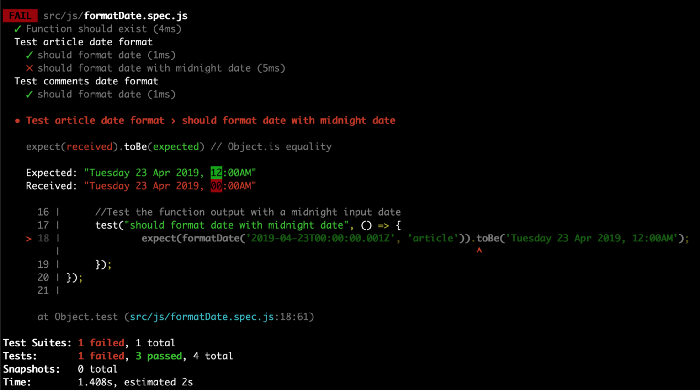

The value of unit testing
Note that in this article, I will not mention the unit testing framework I am using or any framework for that matter. This article is not about promoting or opting for any particular framework, but to help developers understand the purpose and value of unit testing, and not to be put off by it like I was at first glance.
A bit of background
I have been developing since 2010 and came across the concept of unit testing sometime in 2017 whilst watching a React JS tutorial. Back then, my first thought was “I don’t get it, what’s the point?”, so I skipped past the unit testing sections of the course. Maybe I’m in the minority, but when I first came across unit testing, I did not understand its value and felt it was going to prolong the development and delivery of a product.
Fast forward to the present day, where I came to realise this is an old way of thinking about code. I had been working at my previous company where we were redeveloping our whole system with Node.js and React. It was here where my team lead briefly explained the benefits of unit testing and suggested we should unit test our code. Although we never got to the point of actually implementing it, my curiosity for unit testing started to grow. At this point, I was a lot more confident with JavaScript than before and felt much better prepared to learn and apply unit testing. It also happened to be when I felt it was time for a new challenge in my career and found that many front-end developer roles were looking for candidates who had some experience with unit testing.
What is unit testing?
In a nutshell, unit testing is a method where small parts of the code — a unit — are tested in isolation to ensure the code functions as expected and is fit for use. For this, it helps that we keep each function as simple as possible and that it only fulfils one function and not multiple functions. One method to ensure we do this is to use the test-driven development (TDD) process, but this is beyond the scope of this article so I’ll leave it there.
My eureka moment
One of the companies I applied for was The Telegraph. As part of the application process for the role, I was asked to complete a coding challenge which involved writing unit tests to accompany my JavaScript. One of the requirements was to output a specific format for an article and comment publish date and time. The time was required to be displayed in a 12-hour format with an “AM” or “PM” suffix. As I was testing the formatDate function with a time of midnight, the test failed.
This is when I had my eureka moment! I wrote a unit test to test the format of the date and time. The format which needed to be displayed was 12.00AM, however, I was getting 00:00AM. If I hadn’t written a unit test to test for this scenario, it would have been missed. Whilst this may seem minor, it highlights the value and need for unit testing.
Practice, practice, practice
For the past 3 months, I have been writing a lot more unit tests. This has enabled me to not just improve my knowledge and experience, but to appreciate the value of unit testing. I found it especially useful when refactoring or updating code. One of the tasks was to refactor some code to make it more efficient and use es6 features (mainly converting the code into a class). The functionality needed to remain the same. As I was refactoring, a few existing tests were failing. This meant that my refactored code was not functioning correctly.
Unit testing in this instance gave me confidence that my refactor didn’t break any of the existing functionality.
Recognising the value of unit testing
After a few months of unit testing, I’ve come to the following conclusion about why unit testing is valuable:
- Fit for purpose: Ensuring that the code I write is fulfilling its purpose and not producing unexpected results
- Robust: In that, it has been written to withstand varying data samples and the returning values remain as expected
- Confidence: In that, whether I write new code or refactor existing code, it will not break and/or introduce bugs in other parts of the code
These are a few of many reasons why we should unit test code. I can now say with confidence that unit testing is well worth the time and effort to ensure the software or code I write is secure, robust, and fit for purpose.